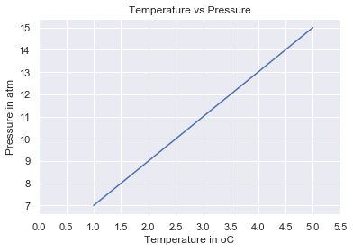
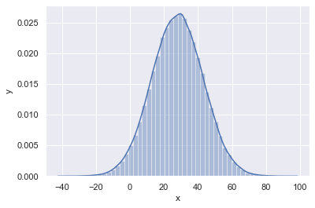

📘 Day 24⚓︎
Python for Statistical Analysis⚓︎
Statistics⚓︎
Statistics is the discipline that studies the collection, organization, displaying, analysing, interpretation and presentation of data. Statistics is a branch of Mathematics that is recommended to be a prerequisite for data science and machine learning. Statistics is a very broad field but we will focus in this section only on the most relevant part. After completing this challenge, you may go onto the web development, data analysis, machine learning and data science path. Whatever path you may follow, at some point in your career you will get data which you may work on. Having some statistical knowledge will help you to make decisions based on data, data tells as they say.
Data⚓︎
What is data? Data is any set of characters that is gathered and translated for some purpose, usually analysis. It can be any character, including text and numbers, pictures, sound, or video. If data is not put in a context, it doesn't make any sense to a human or computer. To make sense from data we need to work on the data using different tools.
The work flow of data analysis, data science or machine learning starts from data. Data can be provided from some data source or it can be created. There are structured and unstructured data.
Data can be found in small or big format. Most of the data types we will get have been covered in the file handling section.
Statistics Module⚓︎
The Python statistics module provides functions for calculating mathematical statistics of numerical data. The module is not intended to be a competitor to third-party libraries such as NumPy, SciPy, or proprietary full-featured statistics packages aimed at professional statisticians such as Minitab, SAS and Matlab. It is aimed at the level of graphing and scientific calculators.
NumPy⚓︎
In the first section we defined Python as a great general-purpose programming language on its own, but with the help of other popular libraries as(numpy, scipy, matplotlib, pandas etc) it becomes a powerful environment for scientific computing.
NumPy is the core library for scientific computing in Python. It provides a high-performance multidimensional array object, and tools for working with arrays.
So far, we have been using vscode but from now on I would recommend using Jupyter Notebook. To access jupyter notebook let's install anaconda. If you are using anaconda most of the common packages are included and you don't have install packages if you installed anaconda.
asabeneh@Asabeneh:~/Desktop/30DaysOfPython$ pip install numpy
Importing NumPy⚓︎
Jupyter notebook is available if your are in favor of jupyter notebook
# How to import numpy
import numpy as np
# How to check the version of the numpy package
print('numpy:', np.__version__)
# Checking the available methods
print(dir(np))
Creating numpy array using⚓︎
Creating int numpy arrays⚓︎
# Creating python List
python_list = [1,2,3,4,5]
# Checking data types
print('Type:', type (python_list)) # <class 'list'>
#
print(python_list) # [1, 2, 3, 4, 5]
two_dimensional_list = [[0,1,2], [3,4,5], [6,7,8]]
print(two_dimensional_list) # [[0, 1, 2], [3, 4, 5], [6, 7, 8]]
# Creating Numpy(Numerical Python) array from python list
numpy_array_from_list = np.array(python_list)
print(type (numpy_array_from_list)) # <class 'numpy.ndarray'>
print(numpy_array_from_list) # array([1, 2, 3, 4, 5])
Creating float numpy arrays⚓︎
Creating a float numpy array from list with a float data type parameter
# Python list
python_list = [1,2,3,4,5]
numy_array_from_list2 = np.array(python_list, dtype=float)
print(numy_array_from_list2) # array([1., 2., 3., 4., 5.])
Creating boolean numpy arrays⚓︎
Creating a boolean a numpy array from list
numpy_bool_array = np.array([0, 1, -1, 0, 0], dtype=bool)
print(numpy_bool_array) # array([False, True, True, False, False])
Creating multidimensional array using numpy⚓︎
A numpy array may have one or multiple rows and columns
two_dimensional_list = [[0,1,2], [3,4,5], [6,7,8]]
numpy_two_dimensional_list = np.array(two_dimensional_list)
print(type (numpy_two_dimensional_list))
print(numpy_two_dimensional_list)
<class 'numpy.ndarray'>
[[0 1 2]
[3 4 5]
[6 7 8]]
Converting numpy array to list⚓︎
# We can always convert an array back to a python list using tolist().
np_to_list = numpy_array_from_list.tolist()
print(type (np_to_list))
print('one dimensional array:', np_to_list)
print('two dimensional array: ', numpy_two_dimensional_list.tolist())
<class 'list'>
one dimensional array: [1, 2, 3, 4, 5]
two dimensional array: [[0, 1, 2], [3, 4, 5], [6, 7, 8]]
Creating numpy array from tuple⚓︎
# Numpy array from tuple
# Creating tuple in Python
python_tuple = (1,2,3,4,5)
print(type (python_tuple)) # <class 'tuple'>
print('python_tuple: ', python_tuple) # python_tuple: (1, 2, 3, 4, 5)
numpy_array_from_tuple = np.array(python_tuple)
print(type (numpy_array_from_tuple)) # <class 'numpy.ndarray'>
print('numpy_array_from_tuple: ', numpy_array_from_tuple) # numpy_array_from_tuple: [1 2 3 4 5]
Shape of numpy array⚓︎
The shape method provide the shape of the array as a tuple. The first is the row and the second is the column. If the array is just one dimensional it returns the size of the array.
nums = np.array([1, 2, 3, 4, 5])
print(nums)
print('shape of nums: ', nums.shape)
print(numpy_two_dimensional_list)
print('shape of numpy_two_dimensional_list: ', numpy_two_dimensional_list.shape)
three_by_four_array = np.array([[0, 1, 2, 3],
[4,5,6,7],
[8,9,10, 11]])
print(three_by_four_array.shape)
[1 2 3 4 5]
shape of nums: (5,)
[[0 1 2]
[3 4 5]
[6 7 8]]
shape of numpy_two_dimensional_list: (3, 3)
(3, 4)
Data type of numpy array⚓︎
Type of data types: str, int, float, complex, bool, list, None
int_lists = [-3, -2, -1, 0, 1, 2,3]
int_array = np.array(int_lists)
float_array = np.array(int_lists, dtype=float)
print(int_array)
print(int_array.dtype)
print(float_array)
print(float_array.dtype)
[-3 -2 -1 0 1 2 3]
int64
[-3. -2. -1. 0. 1. 2. 3.]
float64
Size of a numpy array⚓︎
In numpy to know the number of items in a numpy array list we use size
numpy_array_from_list = np.array([1, 2, 3, 4, 5])
two_dimensional_list = np.array([[0, 1, 2],
[3, 4, 5],
[6, 7, 8]])
print('The size:', numpy_array_from_list.size) # 5
print('The size:', two_dimensional_list.size) # 3
The size: 5
The size: 9
Mathematical Operation using numpy⚓︎
NumPy array is not like exactly like python list. To do mathematical operation in Python list we have to loop through the items but numpy can allow to do any mathematical operation without looping. Mathematical Operation:
- Addition (+)
- Subtraction (-)
- Multiplication (*)
- Division (/)
- Modules (%)
- Floor Division(//)
- Exponential(**)
Addition⚓︎
# Mathematical Operation
# Addition
numpy_array_from_list = np.array([1, 2, 3, 4, 5])
print('original array: ', numpy_array_from_list)
ten_plus_original = numpy_array_from_list + 10
print(ten_plus_original)
original array: [1 2 3 4 5]
[11 12 13 14 15]
Subtraction⚓︎
# Subtraction
numpy_array_from_list = np.array([1, 2, 3, 4, 5])
print('original array: ', numpy_array_from_list)
ten_minus_original = numpy_array_from_list - 10
print(ten_minus_original)
original array: [1 2 3 4 5]
[-9 -8 -7 -6 -5]
Multiplication⚓︎
# Multiplication
numpy_array_from_list = np.array([1, 2, 3, 4, 5])
print('original array: ', numpy_array_from_list)
ten_times_original = numpy_array_from_list * 10
print(ten_times_original)
original array: [1 2 3 4 5]
[10 20 30 40 50]
Division⚓︎
# Division
numpy_array_from_list = np.array([1, 2, 3, 4, 5])
print('original array: ', numpy_array_from_list)
ten_times_original = numpy_array_from_list / 10
print(ten_times_original)
original array: [1 2 3 4 5]
[0.1 0.2 0.3 0.4 0.5]
Modulus⚓︎
# Modulus; Finding the remainder
numpy_array_from_list = np.array([1, 2, 3, 4, 5])
print('original array: ', numpy_array_from_list)
ten_times_original = numpy_array_from_list % 3
print(ten_times_original)
original array: [1 2 3 4 5]
[1 2 0 1 2]
Floor Division⚓︎
# Floor division: the division result without the remainder
numpy_array_from_list = np.array([1, 2, 3, 4, 5])
print('original array: ', numpy_array_from_list)
ten_times_original = numpy_array_from_list // 10
print(ten_times_original)
Exponential⚓︎
# Exponential is finding some number the power of another:
numpy_array_from_list = np.array([1, 2, 3, 4, 5])
print('original array: ', numpy_array_from_list)
ten_times_original = numpy_array_from_list ** 2
print(ten_times_original)
original array: [1 2 3 4 5]
[ 1 4 9 16 25]
Checking data types⚓︎
#Int, Float numbers
numpy_int_arr = np.array([1,2,3,4])
numpy_float_arr = np.array([1.1, 2.0,3.2])
numpy_bool_arr = np.array([-3, -2, 0, 1,2,3], dtype='bool')
print(numpy_int_arr.dtype)
print(numpy_float_arr.dtype)
print(numpy_bool_arr.dtype)
int64
float64
bool
Converting types⚓︎
We can convert the data types of numpy array
- Int to Float
numpy_int_arr = np.array([1,2,3,4], dtype = 'float')
numpy_int_arr
array([1., 2., 3., 4.])
- Float to Int
numpy_int_arr = np.array([1., 2., 3., 4.], dtype = 'int')
numpy_int_arr
array([1, 2, 3, 4])
- Int ot boolean
np.array([-3, -2, 0, 1,2,3], dtype='bool')
array([ True, True, False, True, True, True])
- Int to str
numpy_float_list.astype('int').astype('str')
array(['1', '2', '3'], dtype='<U21')
Multi-dimensional Arrays⚓︎
# 2 Dimension Array
two_dimension_array = np.array([(1,2,3),(4,5,6), (7,8,9)])
print(type (two_dimension_array))
print(two_dimension_array)
print('Shape: ', two_dimension_array.shape)
print('Size:', two_dimension_array.size)
print('Data type:', two_dimension_array.dtype)
<class 'numpy.ndarray'>
[[1 2 3]
[4 5 6]
[7 8 9]]
Shape: (3, 3)
Size: 9
Data type: int64
Getting items from a numpy array⚓︎
# 2 Dimension Array
two_dimension_array = np.array([[1,2,3],[4,5,6], [7,8,9]])
first_row = two_dimension_array[0]
second_row = two_dimension_array[1]
third_row = two_dimension_array[2]
print('First row:', first_row)
print('Second row:', second_row)
print('Third row: ', third_row)
First row: [1 2 3]
Second row: [4 5 6]
Third row: [7 8 9]
first_column= two_dimension_array[:,0]
second_column = two_dimension_array[:,1]
third_column = two_dimension_array[:,2]
print('First column:', first_column)
print('Second column:', second_column)
print('Third column: ', third_column)
print(two_dimension_array)
First column: [1 4 7]
Second column: [2 5 8]
Third column: [3 6 9]
[[1 2 3]
[4 5 6]
[7 8 9]]
Slicing Numpy array⚓︎
Slicing in numpy is similar to slicing in python list
two_dimension_array = np.array([[1,2,3],[4,5,6], [7,8,9]])
first_two_rows_and_columns = two_dimension_array[0:2, 0:2]
print(first_two_rows_and_columns)
[[1 2]
[4 5]]
How to reverse the rows and the whole array?⚓︎
two_dimension_array[::]
array([[1, 2, 3],
[4, 5, 6],
[7, 8, 9]])
Reverse the row and column positions⚓︎
two_dimension_array = np.array([[1,2,3],[4,5,6], [7,8,9]])
two_dimension_array[::-1,::-1]
array([[9, 8, 7],
[6, 5, 4],
[3, 2, 1]])
How to represent missing values ?⚓︎
print(two_dimension_array)
two_dimension_array[1,1] = 55
two_dimension_array[1,2] =44
print(two_dimension_array)
[[1 2 3]
[4 5 6]
[7 8 9]]
[[ 1 2 3]
[ 4 55 44]
[ 7 8 9]]
# Numpy Zeroes
# numpy.zeros(shape, dtype=float, order='C')
numpy_zeroes = np.zeros((3,3),dtype=int,order='C')
numpy_zeroes
array([[0, 0, 0],
[0, 0, 0],
[0, 0, 0]])
# Numpy Zeroes
numpy_ones = np.ones((3,3),dtype=int,order='C')
print(numpy_ones)
[[1 1 1]
[1 1 1]
[1 1 1]]
twoes = numpy_ones * 2
# Reshape
# numpy.reshape(), numpy.flatten()
first_shape = np.array([(1,2,3), (4,5,6)])
print(first_shape)
reshaped = first_shape.reshape(3,2)
print(reshaped)
[[1 2 3]
[4 5 6]]
[[1 2]
[3 4]
[5 6]]
flattened = reshaped.flatten()
flattened
array([1, 2, 3, 4, 5, 6])
## Horitzontal Stack
np_list_one = np.array([1,2,3])
np_list_two = np.array([4,5,6])
print(np_list_one + np_list_two)
print('Horizontal Append:', np.hstack((np_list_one, np_list_two)))
[5 7 9]
Horizontal Append: [1 2 3 4 5 6]
## Vertical Stack
print('Vertical Append:', np.vstack((np_list_one, np_list_two)))
Vertical Append: [[1 2 3]
[4 5 6]]
Generating Random Numbers⚓︎
# Generate a random float number
random_float = np.random.random()
random_float
0.018929887384753874
# Generate a random float number
random_floats = np.random.random(5)
random_floats
array([0.26392192, 0.35842215, 0.87908478, 0.41902195, 0.78926418])
# Generating a random integers between 0 and 10
random_int = np.random.randint(0, 11)
random_int
4
# Generating a random integers between 2 and 11, and creating a one row array
random_int = np.random.randint(2,10, size=4)
random_int
array([8, 8, 8, 2])
# Generating a random integers between 0 and 10
random_int = np.random.randint(2,10, size=(3,3))
random_int
array([[3, 5, 3],
[7, 3, 6],
[2, 3, 3]])
Generationg random numbers⚓︎
# np.random.normal(mu, sigma, size)
normal_array = np.random.normal(79, 15, 80)
normal_array
array([ 89.49990595, 82.06056961, 107.21445842, 38.69307086,
47.85259157, 93.07381061, 76.40724259, 78.55675184,
72.17358173, 47.9888899 , 65.10370622, 76.29696568,
95.58234254, 68.14897213, 38.75862686, 122.5587927 ,
67.0762565 , 95.73990864, 81.97454563, 92.54264805,
59.37035153, 77.76828101, 52.30752166, 64.43109931,
62.63695351, 90.04616138, 75.70009094, 49.87586877,
80.22002414, 68.56708848, 76.27791052, 67.24343975,
81.86363935, 78.22703433, 102.85737041, 65.15700341,
84.87033426, 76.7569997 , 64.61321853, 67.37244562,
74.4068773 , 58.65119655, 71.66488727, 53.42458179,
70.26872028, 60.96588544, 83.56129414, 72.14255326,
81.00787609, 71.81264853, 72.64168853, 86.56608717,
94.94667321, 82.32676973, 70.5165446 , 85.43061003,
72.45526212, 87.34681775, 87.69911217, 103.02831489,
75.28598596, 67.17806893, 92.41274447, 101.06662611,
87.70013935, 70.73980645, 46.40368207, 50.17947092,
61.75618542, 90.26191397, 78.63968639, 70.84550744,
88.91826581, 103.91474733, 66.3064638 , 79.49726264,
70.81087439, 83.90130623, 87.58555972, 59.95462521])
Numpy and Statistics⚓︎
import matplotlib.pyplot as plt
import seaborn as sns
sns.set()
plt.hist(normal_array, color="grey", bins=50)
(array([2., 0., 0., 0., 1., 2., 2., 0., 2., 0., 0., 1., 2., 2., 1., 4., 3.,
4., 2., 7., 2., 2., 5., 4., 2., 4., 3., 2., 1., 5., 3., 0., 3., 2.,
1., 0., 0., 1., 3., 0., 1., 0., 0., 0., 0., 0., 0., 0., 0., 1.]),
array([ 38.69307086, 40.37038529, 42.04769973, 43.72501417,
45.4023286 , 47.07964304, 48.75695748, 50.43427191,
52.11158635, 53.78890079, 55.46621523, 57.14352966,
58.8208441 , 60.49815854, 62.17547297, 63.85278741,
65.53010185, 67.20741628, 68.88473072, 70.56204516,
72.23935959, 73.91667403, 75.59398847, 77.27130291,
78.94861734, 80.62593178, 82.30324622, 83.98056065,
85.65787509, 87.33518953, 89.01250396, 90.6898184 ,
92.36713284, 94.04444727, 95.72176171, 97.39907615,
99.07639058, 100.75370502, 102.43101946, 104.1083339 ,
105.78564833, 107.46296277, 109.14027721, 110.81759164,
112.49490608, 114.17222052, 115.84953495, 117.52684939,
119.20416383, 120.88147826, 122.5587927 ]),
<a list of 50 Patch objects>)
Matrix in numpy⚓︎
four_by_four_matrix = np.matrix(np.ones((4,4), dtype=float))
four_by_four_matrix
matrix([[1., 1., 1., 1.],
[1., 1., 1., 1.],
[1., 1., 1., 1.],
[1., 1., 1., 1.]])
np.asarray(four_by_four_matrix)[2] = 2
four_by_four_matrix
matrix([[1., 1., 1., 1.],
[1., 1., 1., 1.],
[2., 2., 2., 2.],
[1., 1., 1., 1.]])
Numpy numpy.arange()⚓︎
What is Arrange?⚓︎
Sometimes, you want to create values that are evenly spaced within a defined interval. For instance, you want to create values from 1 to 10; you can use numpy.arange() function
# creating list using range(starting, stop, step)
lst = range(0, 11, 2)
lst
range(0, 11, 2)
for l in lst:
print(l)
```sh 0 2 4 6 8 10
```py
# Similar to range arange numpy.arange(start, stop, step)
whole_numbers = np.arange(0, 20, 1)
whole_numbers
array([ 0, 1, 2, 3, 4, 5, 6, 7, 8, 9, 10, 11, 12, 13, 14, 15, 16,
17, 18, 19])
natural_numbers = np.arange(1, 20, 1)
natural_numbers
odd_numbers = np.arange(1, 20, 2)
odd_numbers
array([ 1, 3, 5, 7, 9, 11, 13, 15, 17, 19])
even_numbers = np.arange(2, 20, 2)
even_numbers
array([ 2, 4, 6, 8, 10, 12, 14, 16, 18])
Creating sequence of numbers using linspace⚓︎
# numpy.linspace()
# numpy.logspace() in Python with Example
# For instance, it can be used to create 10 values from 1 to 5 evenly spaced.
np.linspace(1.0, 5.0, num=10)
array([1. , 1.44444444, 1.88888889, 2.33333333, 2.77777778,
3.22222222, 3.66666667, 4.11111111, 4.55555556, 5. ])
# not to include the last value in the interval
np.linspace(1.0, 5.0, num=5, endpoint=False)
array([1. , 1.8, 2.6, 3.4, 4.2])
# LogSpace
# LogSpace returns even spaced numbers on a log scale. Logspace has the same parameters as np.linspace.
# Syntax:
# numpy.logspace(start, stop, num, endpoint)
np.logspace(2, 4.0, num=4)
array([ 100. , 464.15888336, 2154.43469003, 10000. ])
# to check the size of an array
x = np.array([1,2,3], dtype=np.complex128)
x
array([1.+0.j, 2.+0.j, 3.+0.j])
x.itemsize
16
# indexing and Slicing NumPy Arrays in Python
np_list = np.array([(1,2,3), (4,5,6)])
np_list
array([[1, 2, 3],
[4, 5, 6]])
print('First row: ', np_list[0])
print('Second row: ', np_list[1])
First row: [1 2 3]
Second row: [4 5 6]
print('First column: ', np_list[:,0])
print('Second column: ', np_list[:,1])
print('Third column: ', np_list[:,2])
First column: [1 4]
Second column: [2 5]
Third column: [3 6]
NumPy Statistical Functions with Example⚓︎
NumPy has quite useful statistical functions for finding minimum, maximum, mean, median, percentile,standard deviation and variance, etc from the given elements in the array. The functions are explained as follows − Statistical function Numpy is equipped with the robust statistical function as listed below
- Numpy Functions
- Min np.min()
- Max np.max()
- Mean np.mean()
- Median np.median()
- Varience
- Percentile
- Standard deviation np.std()
np_normal_dis = np.random.normal(5, 0.5, 100)
np_normal_dis
## min, max, mean, median, sd
print('min: ', two_dimension_array.min())
print('max: ', two_dimension_array.max())
print('mean: ',two_dimension_array.mean())
# print('median: ', two_dimension_array.median())
print('sd: ', two_dimension_array.std())
min: 1
max: 55
mean: 14.777777777777779
sd: 18.913709183069525
min: 1
max: 55
mean: 14.777777777777779
sd: 18.913709183069525
print(two_dimension_array)
print('Column with minimum: ', np.amin(two_dimension_array,axis=0))
print('Column with maximum: ', np.amax(two_dimension_array,axis=0))
print('=== Row ==')
print('Row with minimum: ', np.amin(two_dimension_array,axis=1))
print('Row with maximum: ', np.amax(two_dimension_array,axis=1))
[[ 1 2 3]
[ 4 55 44]
[ 7 8 9]]
Column with minimum: [1 2 3]
Column with maximum: [ 7 55 44]
=== Row ==
Row with minimum: [1 4 7]
Row with maximum: [ 3 55 9]
How to create repeating sequences?⚓︎
a = [1,2,3]
# Repeat whole of 'a' two times
print('Tile: ', np.tile(a, 2))
# Repeat each element of 'a' two times
print('Repeat: ', np.repeat(a, 2))
Tile: [1 2 3 1 2 3]
Repeat: [1 1 2 2 3 3]
How to generate random numbers?⚓︎
# One random number between [0,1)
one_random_num = np.random.random()
one_random_in = np.random
print(one_random_num)
0.6149403282678213
0.4763968133790438
0.4763968133790438
# Random numbers between [0,1) of shape 2,3
r = np.random.random(size=[2,3])
print(r)
[[0.13031737 0.4429537 0.1129527 ]
[0.76811539 0.88256594 0.6754075 ]]
print(np.random.choice(['a', 'e', 'i', 'o', 'u'], size=10))
['u' 'o' 'o' 'i' 'e' 'e' 'u' 'o' 'u' 'a']
['i' 'u' 'e' 'o' 'a' 'i' 'e' 'u' 'o' 'i']
['iueoaieuoi']
## Random numbers between [0, 1] of shape 2, 2
rand = np.random.rand(2,2)
rand
array([[0.97992598, 0.79642484],
[0.65263629, 0.55763145]])
rand2 = np.random.randn(2,2)
rand2
array([[ 1.65593322, -0.52326621],
[ 0.39071179, -2.03649407]])
# Random integers between [0, 10) of shape 2,5
rand_int = np.random.randint(0, 10, size=[5,3])
rand_int
array([[0, 7, 5],
[4, 1, 4],
[3, 5, 3],
[4, 3, 8],
[4, 6, 7]])
from scipy import stats
np_normal_dis = np.random.normal(5, 0.5, 1000) # mean, standard deviation, number of samples
np_normal_dis
## min, max, mean, median, sd
print('min: ', np.min(np_normal_dis))
print('max: ', np.max(np_normal_dis))
print('mean: ', np.mean(np_normal_dis))
print('median: ', np.median(np_normal_dis))
print('mode: ', stats.mode(np_normal_dis))
print('sd: ', np.std(np_normal_dis))
min: 3.557811005458804
max: 6.876317743643499
mean: 5.035832048106663
median: 5.020161980441937
mode: ModeResult(mode=array([3.55781101]), count=array([1]))
sd: 0.489682424165213
plt.hist(np_normal_dis, color="grey", bins=21)
plt.show()

# numpy.dot(): Dot Product in Python using Numpy
# Dot Product
# Numpy is powerful library for matrices computation. For instance, you can compute the dot product with np.dot
# Syntax
# numpy.dot(x, y, out=None)
Linear Algebra⚓︎
- Dot Product
## Linear algebra
### Dot product: product of two arrays
f = np.array([1,2,3])
g = np.array([4,5,3])
### 1*4+2*5 + 3*6
np.dot(f, g) # 23
NumPy Matrix Multiplication with np.matmul()⚓︎
### Matmul: matruc product of two arrays
h = [[1,2],[3,4]]
i = [[5,6],[7,8]]
### 1*5+2*7 = 19
np.matmul(h, i)
array([[19, 22],
[43, 50]])
## Determinant 2*2 matrix
### 5*8-7*6np.linalg.det(i)
np.linalg.det(i)
-1.999999999999999
Z = np.zeros((8,8))
Z[1::2,::2] = 1
Z[::2,1::2] = 1
Z
array([[0., 1., 0., 1., 0., 1., 0., 1.],
[1., 0., 1., 0., 1., 0., 1., 0.],
[0., 1., 0., 1., 0., 1., 0., 1.],
[1., 0., 1., 0., 1., 0., 1., 0.],
[0., 1., 0., 1., 0., 1., 0., 1.],
[1., 0., 1., 0., 1., 0., 1., 0.],
[0., 1., 0., 1., 0., 1., 0., 1.],
[1., 0., 1., 0., 1., 0., 1., 0.]])
new_list = [ x + 2 for x in range(0, 11)]
new_list
[2, 3, 4, 5, 6, 7, 8, 9, 10, 11, 12]
[2, 3, 4, 5, 6, 7, 8, 9, 10, 11, 12]
[2, 3, 4, 5, 6, 7, 8, 9, 10, 11, 12]
np_arr = np.array(range(0, 11))
np_arr + 2
array([ 2, 3, 4, 5, 6, 7, 8, 9, 10, 11, 12])
We use linear equation for quantities which have linear relationship. Let's see the example below:
temp = np.array([1,2,3,4,5])
pressure = temp * 2 + 5
pressure
array([ 7, 9, 11, 13, 15])
plt.plot(temp,pressure)
plt.xlabel('Temperature in oC')
plt.ylabel('Pressure in atm')
plt.title('Temperature vs Pressure')
plt.xticks(np.arange(0, 6, step=0.5))
plt.show()

To draw the Gaussian normal distribution using numpy. As you can see below, the numpy can generate random numbers. To create random sample, we need the mean(mu), sigma(standard deviation), mumber of data points.
mu = 28
sigma = 15
samples = 100000
x = np.random.normal(mu, sigma, samples)
ax = sns.distplot(x);
ax.set(xlabel="x", ylabel='y')
plt.show()

Summery⚓︎
To summarize, the main differences with python lists are:
- Arrays support vectorized operations, while lists don’t.
- Once an array is created, you cannot change its size. You will have to create a new array or overwrite the existing one.
- Every array has one and only one dtype. All items in it should be of that dtype.
- An equivalent numpy array occupies much less space than a python list of lists.
- numpy arrays support boolean indexing.
💻 Exercises: Day 24⚓︎
- Repeat all the examples
🎉 CONGRATULATIONS ! 🎉